Naval Kishore Mehta
Researcher
Hiroshima University |
Introduction
- I am currently a Young Researcher at Hiroshima University, Japan, and have recently submitted my Ph.D. as part of the Integrated Dual-Degree (M.Tech + Ph.D.) programme at AcSIR, | CSIR-CEERI, where I worked in the Advanced Information Technologies Group (AITG) under the guidance of Dr. Sanjay Singh and Dr. Ravi Saini. My research focuses on human–computer interaction and video understanding, where I integrate deep learning with industrial applications in multimodal activity monitoring, predictive safety systems, and human-centric AI for collaborative environments.
- Before joining CSIR-CEERI, I worked as a Research Intern at IIT Bombay in the Physics and MEMS departments under the mentorship of Prof. Shiva Prasad and Prof. N. Venkataramani. I hold a Master's degree in Electronics Science from Kurukshetra University and a Bachelor's degree in Electronics (Hons.) from the University of Delhi.
Research
- Journals:
- Knowledge-Based Systems (KBS)
- Neural Networks
- Engineering Applications of Artificial Intelligence (EAAI)
- IEEE Transactions on Industrial Informatics
- The Journal of Supercomputing
- International Journal of Machine Learning and Cybernetics
- Scientific Reports
- Conferences:
- Conference on Human Factors in Computing Systems (CHI)
- International Conference on Human-Robot Interaction (HRI)
- International Conference on Pattern Recognition (ICPR)
- International Joint Conference on Neural Networks (IJCNN)
- Annual Conference of the IEEE Industrial Electronics Society (IECON)
- IEEE: Institute of Electrical and Electronics Engineers
- IES: Industrial Electronics Society
- ACM: Association for Computing Machinery
|
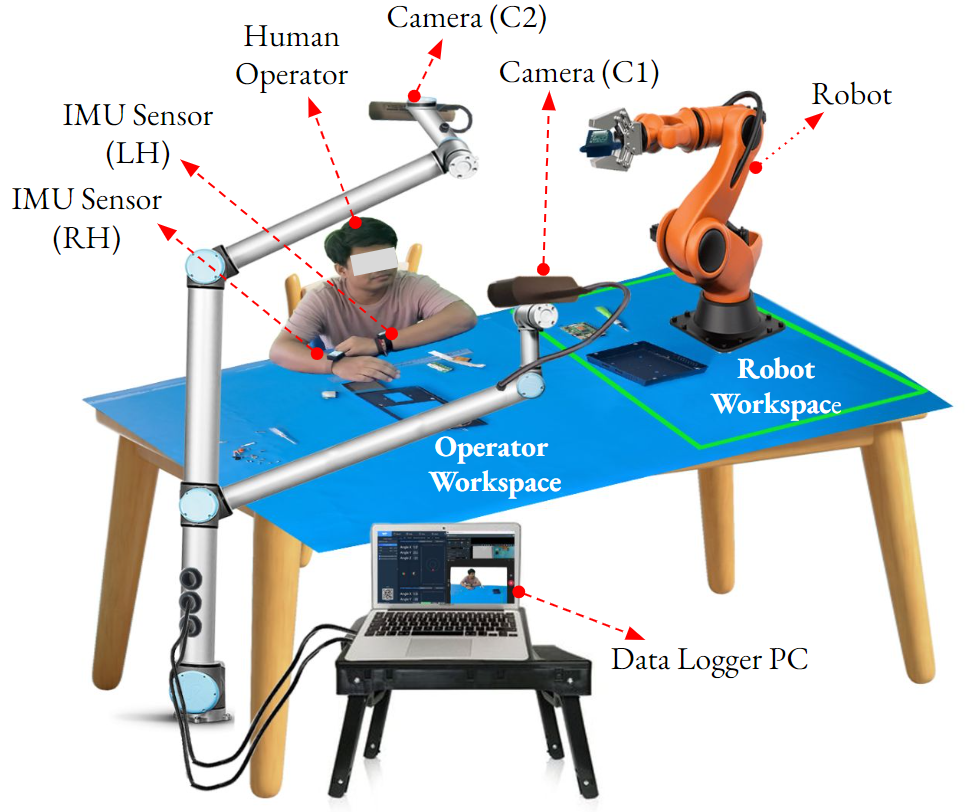
|
Naval Kishore Mehta, Arvind, Himanshu Kumar, Abeer Banerjee, Sumeet Saurav, Sanjay Singh IEEE/ACM International Conference on Human-Robot Interaction, 2025 (Oral) (CORE-A) Paper | Dataset | Code This project tackles the challenge of detecting operator actions, engagement, and object interactions in dynamic industrial workflows. We introduce a multimodal dataset featuring RGB, depth, and IMU data from 20 sessions (176 minutes of untrimmed video) annotated for action localization, object interaction, and engagement prediction. Also, we propose a multimodal network that fuses RGB, IMU, and skeleton data to improve engagement prediction accuracy, advancing research in human-robot collaboration and operator monitoring. |
|
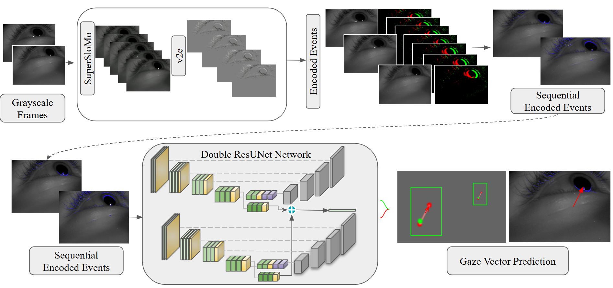
|
Himanshu Kumar, Naval Kishore Mehta, Sumeet Saurav, Sanjay Singh Image and Vision Computing New Zealand (IVCNZ), 2024 (Oral) Paper This project focuses on improving gaze estimation by bridging the gap between synthetic and real event data. It introduces a synthetic gaze event dataset capturing saccadic dynamics, proposes a novel Dual ResUNet architecture for accurate gaze prediction, and develops an end-to-end algorithm using the v2e simulator and event encoding to enable precise estimation in fully synthetic environments. |
|
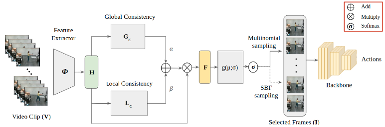
|
Naval Kishore Mehta, Shyam Sunder Prasad, Sumeet Saurav, Sanjay Singh International Conference on Emerging Technologies and Factory Automation (ETFA), 2024 (Oral) Paper We introduce Dynamic Frame Sampler (DF Sampler), a novel adaptive keyframe sampling method for variable-duration action sequences in complex industrial settings. Using a self-supervised approach, DF Sampler selects motion-relevant keyframes to enhance HAR system efficiency. Its effectiveness is validated on the HRI30 dataset. |
|
|
Naval Kishore Mehta, Shyam Sunder Prasad, Sumeet Saurav, Ravi Saini, Sanjay Singh IEEE Transactions on Instrumentation and Measurement, 2024 Paper | Code This project introduces IAR-Net, a novel neural network that integrates human and object context for industrial human activity recognition. It is complemented by the specialized LAMIS database, a first-of-its-kind dataset featuring 17 industrial action categories. Also, the work proposes Adaptive Frame Sampling (AFS), a novel frame selection technique evaluated against existing methods. AFS-IAR-Net achieves state-of-the-art performance on the HRI30 benchmark and LAMIS database, advancing SOP monitoring and industrial ergonomic analysis. |
|
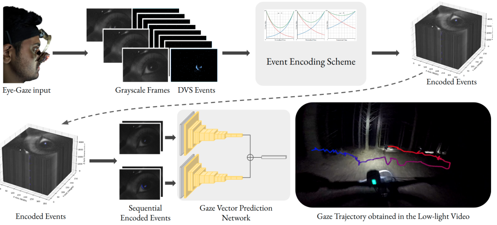
|
Abeer Banerjee, Naval Kishore Mehta, Shyam S Prasad, Himanshu Kumar, Sumeet Saurav, Sanjay Singh International Joint Conference on Neural Networks (IJCNN), 2024 (Oral) CORE-B Paper This project focuses on overcoming the challenges of gaze vector prediction in extremely low-light environments. By introducing a unique temporal event-encoding approach and designing a tailored neural network, it ensures precise spatial localization and consistent accuracy in gaze vector estimation. |
|
|
Naval Kishore Mehta, Shyam S Prasad, Deepak Kumar This project developed a virtual try-on system, leveraging diffusion models and appearance flow techniques to address high-resolution image challenges such as misalignment and occlusions. By integrating a precise warping network, the system significantly improved the realism of digital apparel fittings. |
|
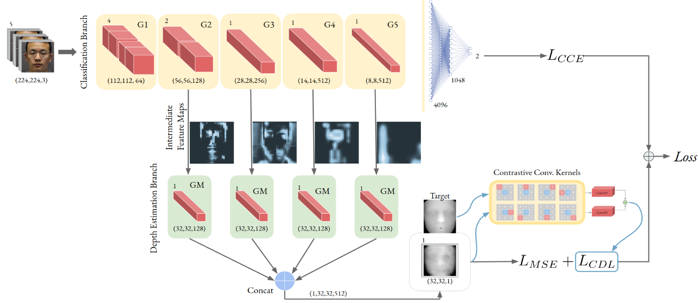
|
Shyam Sunder Prasad, Naval Kishore Mehta, Abeer Banerjee, Sumeet Saurav, Sanjay Singh Neurocomputing Journal, Elsevier, 2023 Paper | Code This project introduces a jointly supervised parallel branched neural network designed for robust video-based spoof detection in real-world scenarios. The auxiliary branch enhances the primary network by estimating depth through intermediate feature fusion, improving detection accuracy. It is complemented by the CSDiNE dataset, a large-scale, in-house video dataset tailored for spoof detection under varied illumination and background conditions. The proposed network achieves state-of-the-art performance with low average classification error rate (ACER) of 0.94% on the CSDiNE dataset, demonstrating computational efficiency and robustness for practical applications. |
|
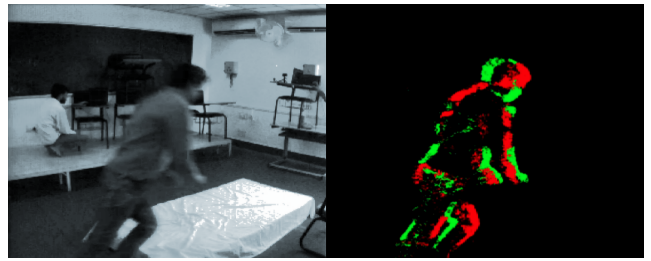
|
Shyam Sunder Prasad, Naval Kishore Mehta, Himanshu Kumar, Abeer Banerjee, Sumeet Saurav, Sanjay Singh Indian Conference on Computer Vision, Graphics and Image Processing (ICVGIP), 2023 Paper This paper presents a fall detection framework utilizing Spiking Neural Networks (SNN) to replicate neural activity, achieving an accuracy of 94.59%. Furthermore, it explores a hybrid approach combining 3D-CNN & SNN (NeuCube), which significantly improves detection accuracy to 97.84% on the recorded dataset. |
|
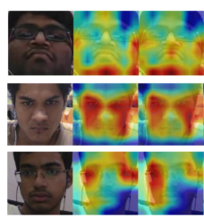
|
Naval Kishore Mehta, Shyam Sunder Prasad, Sumeet Saurav, Ravi Saini, Sanjay Singh Applied Intelligence Journal, Springer, 2022 Paper This paper presents DenseAttNet, a self-attention DenseNet model achieving state-of-the-art performance in evaluating student engagement in virtual and traditional learning settings. On the DAiSEE dataset, it records engagement and boredom classification accuracies of 63.59% and 54.27%, respectively, and excels in multi-label tasks with accuracies up to 95.85%. Regression experiments further validate its effectiveness, achieving an MSE of 0.0347 on DAiSEE and 0.0877 on EmotiW-EP, establishing DenseAttNet as a robust solution for analyzing emotional states in e-learning. |
|
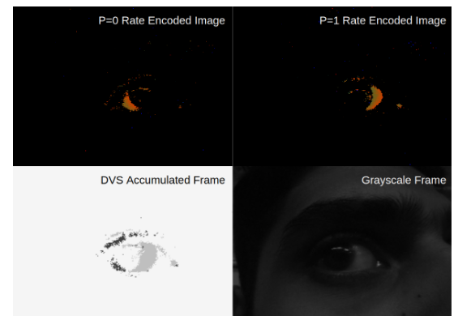
|
Abeer Banerjee, Shyam Sunder Prasad, Naval Kishore Mehta, Himanshu Kumar, Sumeet Saurav, Sanjay Singh International Conference on Intelligent Human Computer Interaction (IHCI), 2022 Paper We propose a novel six-channel event encoding technique to process saccadic motion event logs into structured images and design a Convolutional Neural Network for gaze prediction based on these encoded events. The approach is validated using metrics such as average distance, average angle, and pixel radius accuracy, demonstrating its reliability. |
|
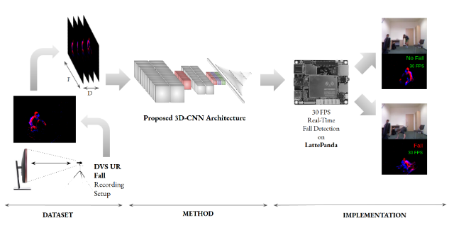
|
Shyam Sunder Prasad, Naval Kishore Mehta, Himanshu Kumar, Abeer Banerjee, Sumeet Saurav, Sanjay Singh IEEE India Conference (INDICON), 2022 [Paper] [Slides] This paper addresses the challenge of privacy-preserving fall detection, a subset of human action recognition, using the Dynamic Vision Sensor (DVS). We demonstrate real-time fall detection with a 3D-Convolutional Neural Network (3D-CNN), achieving an average sensitivity of 99.34% and specificity of 100%. With its small memory footprint, low parameter count, and efficient operation, the model delivers real-time performance on edge devices, making it practical for deployment. |
|
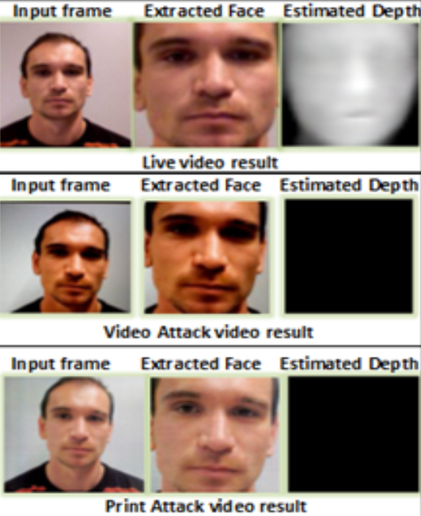
|
Shyam Sunder Prasad, Naval Kishore Mehta, Ankit Shukla, Pranav Mahajan, Arshdeep Singh, Sumeet Saurav, Sanjay Singh International Conference on Frontiers of Intelligent Computing: Theory and Applications (FICTA), 2022 Paper (Best Paper Award) We propose an explainable AI model that not only classifies spoof and live faces but also explains why they are different using mid-level features. Our proposed end-to-end face anti-spoofing network extracts the depth map and classifies the face input. |
|
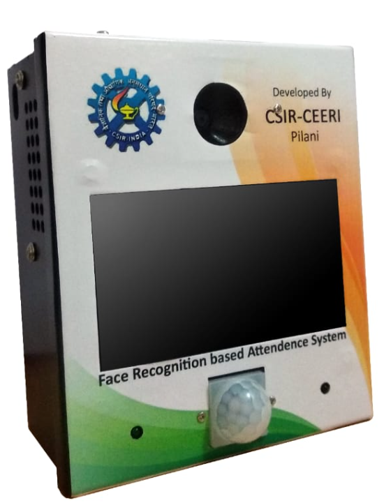
|
Shyam Sunder Prasad, Prashant S Gidde, Naval Kishore Mehta, Arvind, Anil Saini, Bijender Kumar, Sumeet Saurav, Ravi Saini, Sanjay Singh, P. C. Panchariya CSIR-CEERI Foundation Day Technology Excellence Award, 2021 All India 3rd Rank at India International Science Festival (IISF), 2021 Patent Applied This project introduces an advanced attendance management system designed for versatility, scalability, and security. Capable of operating in both network-based and standalone configurations, it provides audio and video feedback for an enhanced user experience while maintaining a compact, memory-efficient database for long-term data retention. Powered by an AI model specifically trained for Indian faces, it incorporates anti-spoofing technology to ensure high security and accuracy. The system efficiently handles over 1500 users simultaneously and has been successfully deployed in more than 20 institutes, marking attendance within seconds with a flawless accuracy record. Built with in-house designed software and hardware, this innovative solution streamlines the attendance process with optimal functionality and reliability. |
|
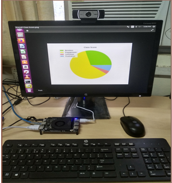
|
Naval Kishore Mehta, Chander Mohan, Shyam S Prasad, Sanjay Singh 2nd Prize in INNOVISION-2019 The system offers automatic and timely feedback to instructors, enhancing students' learning experiences by identifying absent-mindedness during lectures, improving content delivery effectiveness, and boosting learning outcomes. Key features include one-time face registration, engagement level prediction for each student, automated attendance tracking, and the ability to highlight students needing remedial classes based on individual scores. Also, it plots overall class engagement over time, offering actionable insights to optimize teaching strategies. |
|
|
Naval Kishore Mehta, Sohan Dudala, S Srikanth, Avinash, Sushil Raut, Idaku Ishii Sakura Science Exchange Program Fellow, 2019 International Linkage Degree Program Fellowship (Hiroshima University, Japan), 2019 This project implements a Convolutional Neural Network (CNN) to enable a robotic arm to play the classic game of Rock-Paper-Scissors. Leveraging an HSV camera, the system processes hand gestures in real-time and is deployed on an edge computing platform for optimal performance. The recognized gestures control the robotic arm, making this system efficient and responsive for human-robot interaction. |
|
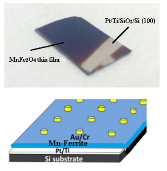
|
Naval Kishore Mehta IIT Bomabay, 2017 This project focuses on the deposition of Mn-ferrite thin films on Pt/Ti/SiO₂/Si substrates using Pulsed Laser Deposition (PLD), complemented by bulk material preparation. The structural and crystalline properties are characterized using X-ray Diffraction (XRD), ensuring phase purity and high-quality deposition. Mn-ferrite's versatile properties enable applications in magnetic sensors, spintronics, energy storage, RF/microwave devices, and environmental catalysis, making it a promising material for advanced technological innovations. |
|
|
Naval Kishore Mehta, Surya Pratap Deopa, Abhishek Saxena, Amit Jain Anveshan Fellowship, 2014 Exoskeleton Arm is an active upper limb assistive device that is actuated by a High Torque servo Motor(τ = 17.65197 Nm) and powered by two 11.2 V Li-Po battery connected in series .The whole system is commanded by bio-electric signals which pass by the brain to contract the target muscles. This can be used as physiotherapy device in areas of rehabilitation .Another use of this Exoskeleton Arm is in areas where heavy lifting is required. These areas may include heavy lifting in warehouses, factories and even in rescue operations. |